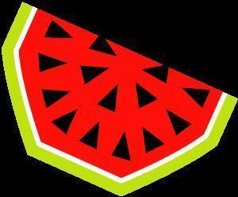
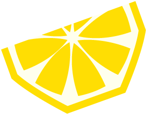
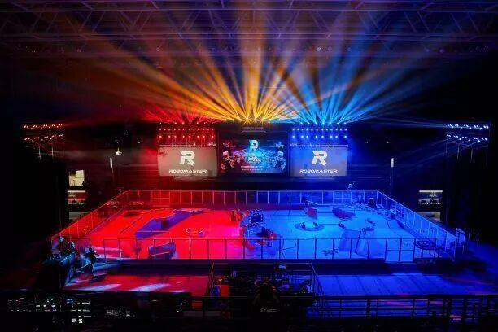
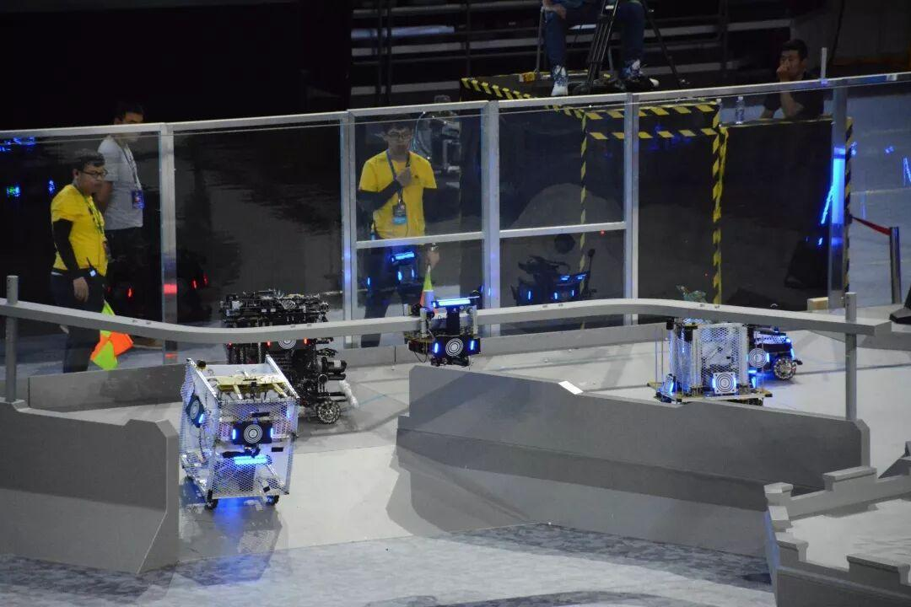
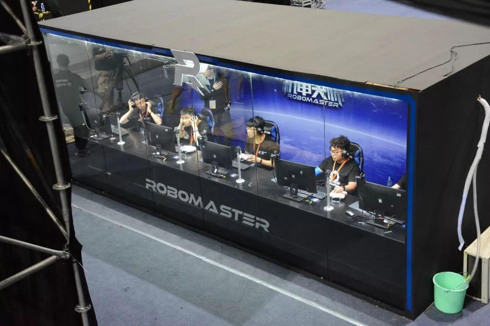
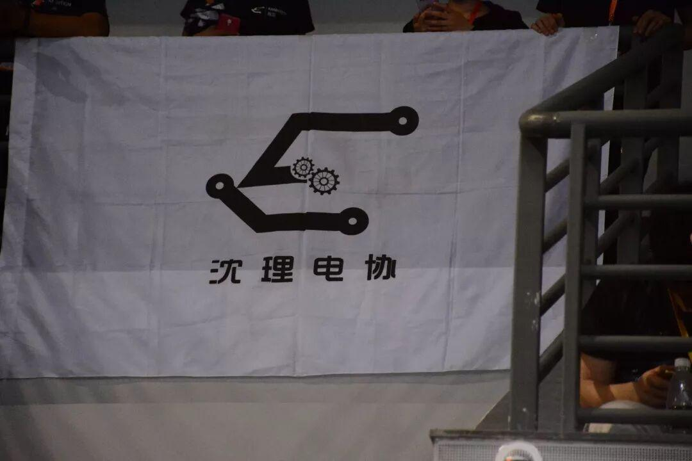
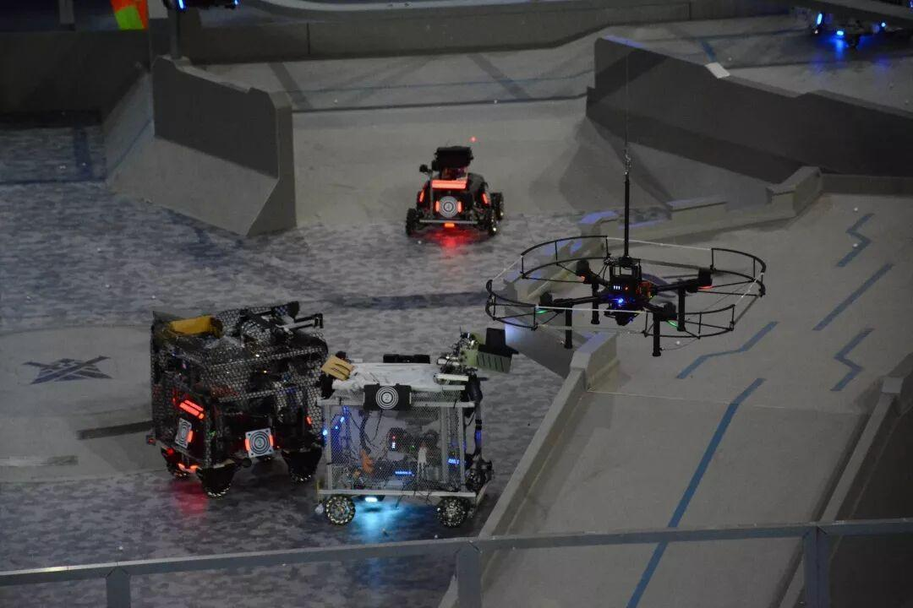
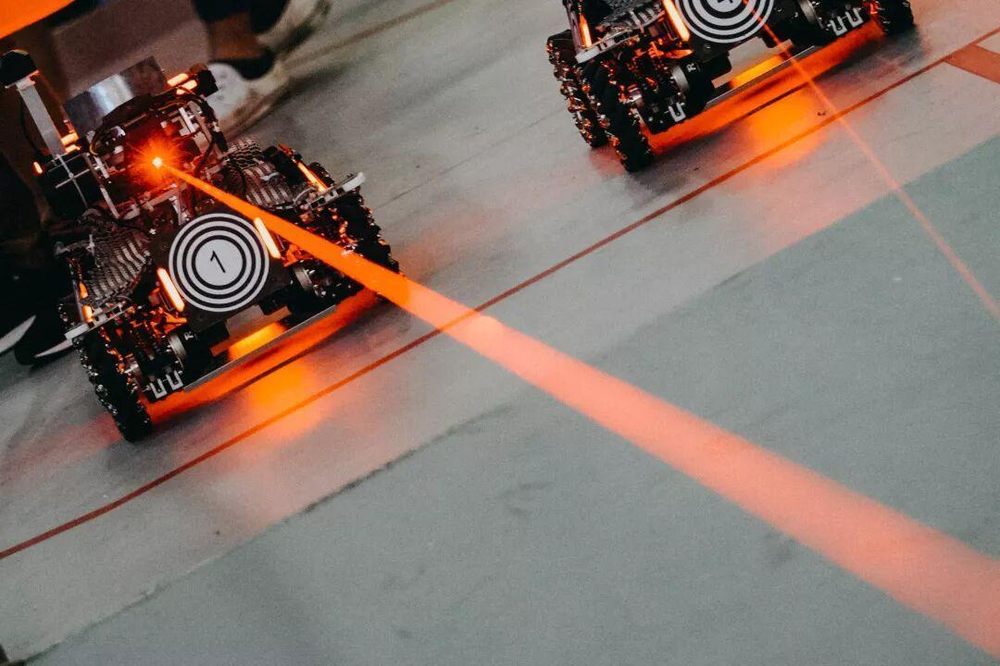

Ambition战队采访

Ambition


怀着想要了解Ambition战队之心，我走入了沈理文体中心210，开启了一段神奇的采访之旅。😊

名模美照

Q
当时为什么想加入这个战队呢？
王喆学长：主要是因为爱好吧，确实是比较喜欢机器人这方面的东西。当时也是种种原因吧，没能进入到技术部发展，还是希望能在社团里善始善终吧！
Q
加入这个战队，你最大的收获是什么呢？
孙和盛学长：学到了技术吧，各方面的技术 ，对以后可能会有点帮助吧。（标准的理工男回答😂）
牛栋鑫学长：学会了可多了，比如学会了拧螺丝。。(￣▽￣)"
曹李钧学长：办公软件比以前熟练了，头发也比以前少了。（这可能就是优秀队员的体现吧😍）
孙泓玉学姐：最大的收获可能就是收获了一群很真诚的朋友，还有在战队成员身上学到的技术，因为我是通信专业的，这些东西和我的专业也有一定的联系。
了解到Ambition战队明年要参加Robomaster大赛，那就来问问我们已经参加过一次比赛的“老”学长有没有什么经验可传授吧！
Q
作为已经参加过一次比赛的学长，有什么可以和今年参赛队员分享的经验或者想说的话吗？
牛栋鑫学长：坚持是很重要的，做比赛的过程很漫长，要能耐下心来，设计时最好能想更多的方案，争取做到最好！(ง •_•)ง
孙和盛学长：按时把该做好的做好，不要老拖拖拉拉的，这个习惯非常不好。做东西要提前完成，这样才能留出时间进行最后的调试。
王喆学长：嗯...革命尚未成功，同志们仍需努力。 o(*￣▽￣*)o

赛场照片






在扈竞学姐和吉吉学长的帮助下，成功采访到了战队三位大佬：孟凡宇学长（正在读研，曾任战队队长），董辉学长（曾任社团会长），王枭学长（现任战队队长）。😀
Q
作为战队的老成员，有什么想对新队员说的吗？
孟凡宇学长：不怕苦，不怕累，平时干活认真点，也不要急功近利，尽自己最大努力去做就行。要把自己管理好，然后多去和同学交流，要尽量的比别人多想一步，多做一步，这样的话这个队伍才会往下走的更好，然后方案多了之后，下一步就会走的轻松点，也就会比别人有更多的时间，成绩也就会更好一些。
董辉学长：说一点建议吧，一定要按先前的进度计划走，不要说今天任务有点困难就拖到明天完成，千万不要，即使熬夜也一定要完成。如果要是没按时完成，进度会拖得很慢，就会导致这个项目做的比较死板。
王枭学长：要学会自学，学会自我发现，自我提高，主动能力强一点，积极性高一点。做一件事情也必须全力以赴吧！
Q
你认为战队是怎么一步步走过来，日渐壮大的呢？
孟凡宇学长：主要还是以兴趣为主，然后有志同道合的人在一块，就可以共同做一些非常有意义的事情，就会有一些这类的竞赛什么的，慢慢的就会召集到更多的人。
Q
你对这个战队有一个怎样的期望？
孟凡宇学长：最直观的期望还是希望能获得一些好成绩吧，争取能在国赛拿一些好的名次，然后期望这个队伍更加的和谐和壮大，能够形成标准的一些体系就可以。
董辉学长：一定要保持这个劲头，不要产生傲慢心理，一定要把握好自己的心态，继续向前发展。可能原本的计划并不适合社团的发展，一定要及时的创新，因为咱们这个社团本身主要以创新出名在沈阳理工的，工作也主要以创新打出声望的。
王枭学长：希望专心做比赛的人越来越多，凝聚力越来越强，然后分工越来越明确，能够成体系，成建制的去做好每一场比赛，通过自己的努力换回自己的那一份收获吧！
战队大佬的建议和忠告，一定要牢记哦！😉

小哥哥们

☑超级帅气
☑包邮不贵
☑品质保证
☑香甜可口
☑可咸可甜
☑能力超强
别馋啦~
今天的采访就到这里啦，如果你没听够，没看够，欢迎随时来文体中心咨询！o(*￣▽￣*)ブ
• end •
编辑：杜遇涵